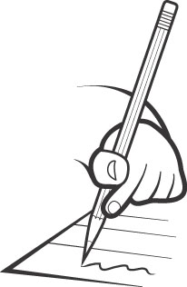

Algunas reflexiones finales

Esto es precisamente lo que queríamos que notaras con todas las actividades del módulo, en el cual al final pudiste construir el esquema de dos textos originales, empleando muchas referencias a otros textos escritos con anterioridad. Siempre que leas un texto, haz que dialogue con todas las otras fuentes previas que tienes en tu cabeza sobre el tema, sus autores o el campo disciplinar, contrástalo con otras fuentes que hablen del mismo tema y a partir de todo lo anterior, crea una posición propia y crítica sobre lo que acabas de leer. Por último, cuando tengas una visión amplia sobre el tema que leíste y una comprensión suficiente, ¡escribe!, y no tengas miedo a defender, contrastar o refutar las fuentes que utilizaste para aprender sobre el tema y crear una posición propia frente al mismo. Eso sí, ¡nunca olvides dar crédito a los autores que utilizas en tus escritos!